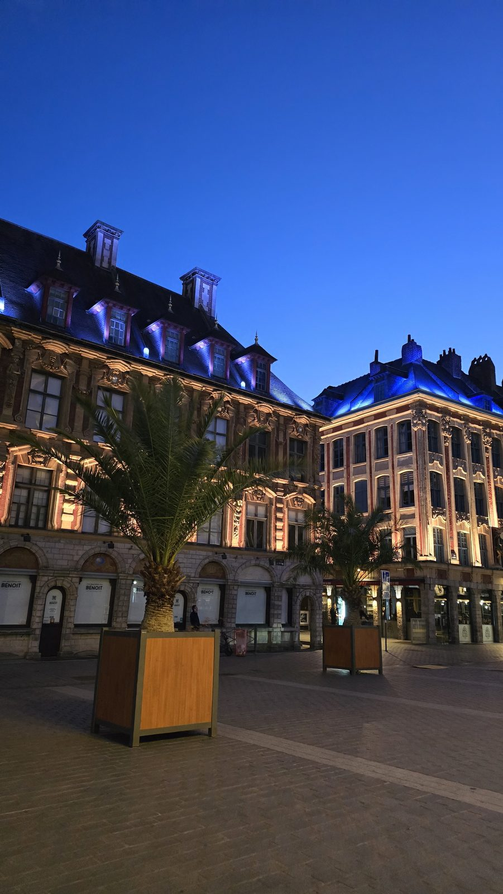
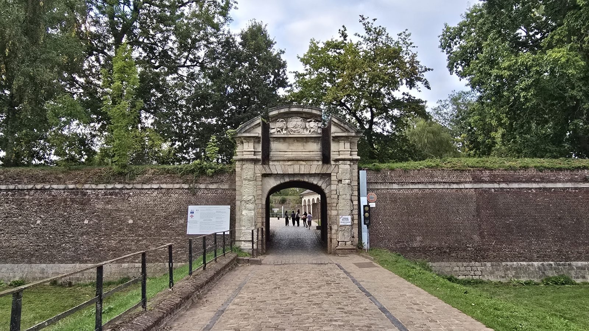
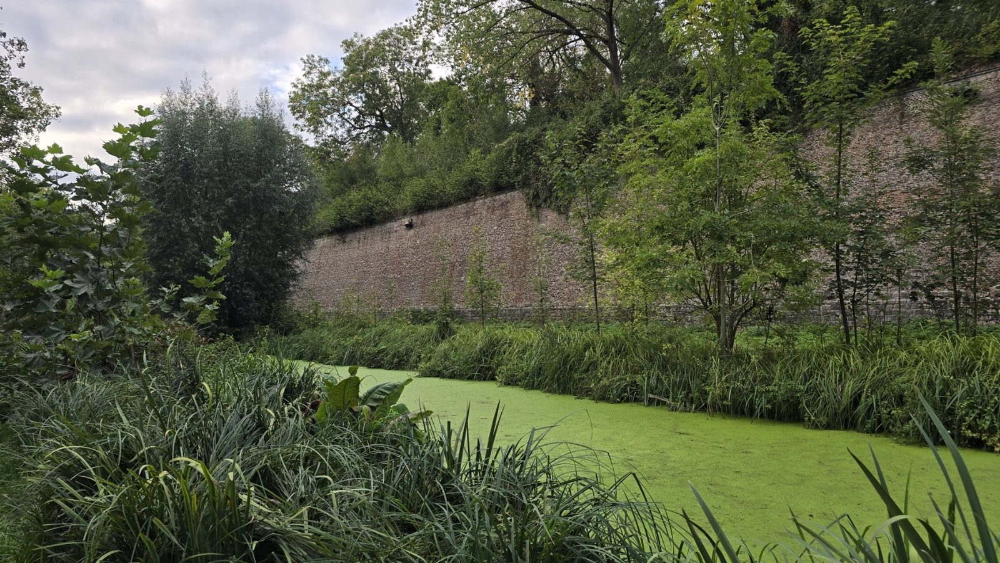

Lieux à visiter à Lille
Lille se visite très bien à pied. L'essentiel tient dans une demi-heure de marche. Voici les endroits à voir, du plus connu au plus discret.
Où aller
Le Vieux-Lille et la Grand'Place
On commence forcément par là. La Grand'Place, qui s'appelle officiellement place du Général-de-Gaulle, avec la Vieille Bourse et ses arcades. Puis les ruelles pavées de la rue de la Monnaie, bordées de façades à pignons du XVIIe siècle. C'est le plus beau quartier de la ville en photo, et le meilleur endroit où marcher sans but précis.

Le Beffroi de l'Hôtel de Ville
104 mètres, c'est le plus haut beffroi de la région. De là-haut, on voit les toits de brique à perte de vue et, quand le temps est dégagé, jusqu'en Belgique. On ne monte qu'en visite guidée, à heures fixes. Vérifiez les horaires du jour sur place, ils changent souvent.
Le Palais des Beaux-Arts
C'est l'un des plus grands musées de France après Paris. Rubens, Goya, les impressionnistes, et une collection de plans-reliefs de villes fortifiées qu'on ne voit nulle part ailleurs. Comptez une heure et demie si vous ne voulez pas courir.
La Citadelle de Lille et son parc
La forteresse en étoile de Vauban date du XVIIe siècle. L'armée l'occupe toujours, donc elle ne se visite qu'en partie. Le parc autour, lui, est ouvert toute l'année. C'est le plus grand espace vert de la ville, parfait pour une balade ou un pique-nique, et il y a un zoo juste à côté, payant mais peu cher, fermé le mardi et en hiver.


La cathédrale Notre-Dame-de-la-Treille
Une cathédrale qui surprend. Sa façade en marbre translucide n'a été terminée qu'en 1999, après plus d'un siècle de travaux, et elle laisse passer une lumière très particulière à l'intérieur. Ça fait un drôle de contraste avec les façades classiques du Vieux-Lille juste à côté.
Conseils pratiques
- Se déplacer
- Tout se fait à pied depuis le centre. Le métro (lignes 1 et 2) dépanne pour les extrémités
- Budget
- La rue et les parcs sont gratuits. Prévoyez une entrée pour le Palais des Beaux-Arts et pour monter au Beffroi
- Meilleur moment
- Tôt le matin dans le Vieux-Lille, surtout le week-end